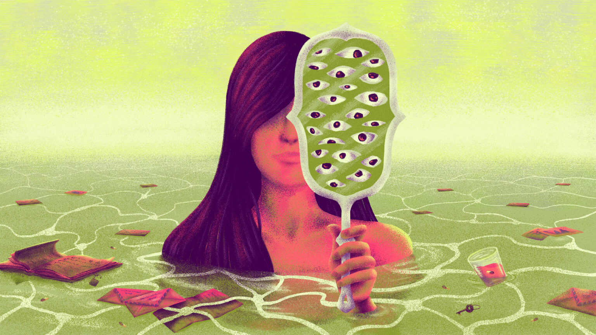

<!DOCTYPE html>
<html lang="en">

<head>
    <meta charset="UTF-8">
    <meta name="viewport" content="width=device-width, initial-scale=1.0">
    <link rel="icon" href="../Imgs/Iconos/prueba.png" type="image/x-icon">
    <title>La Mala</title>
    <link href="https://cdn.jsdelivr.net/npm/bootstrap@5.3.0/dist/css/bootstrap.min.css" rel="stylesheet"
        integrity="sha384-9ndCyUaIbzAi2FUVXJi0CjmCapSmO7SnpJef0486qhLnuZ2cdeRhO02iuK6FUUVM" crossorigin="anonymous">
    <link rel="stylesheet" href="https://cdnjs.cloudflare.com/ajax/libs/font-awesome/6.4.0/css/all.min.css"
        integrity="sha512-iecdLmaskl7CVkqkXNQ/ZH/XLlvWZOJyj7Yy7tcenmpD1ypASozpmT/E0iPtmFIB46ZmdtAc9eNBvH0H/ZpiBw=="
        crossorigin="anonymous" referrerpolicy="no-referrer" />
    <link rel="stylesheet" href="../../Style/style.css">
    <link rel="preconnect" href="https://fonts.googleapis.com">
    <link rel="preconnect" href="https://fonts.gstatic.com" crossorigin>
    <link href="https://fonts.googleapis.com/css2?family=Oswald:wght@400;500;600;700&family=Volkhov&display=swap"
        rel="stylesheet">
</head>

<body>

    <!-- NABVAR -->

    <nav class="navbar navbar-expand-lg bg-body-tertiary" id="nav-noti-violeta">
        <div class="container-fluid ms-4 me-4">
            <a class="navbar-brand" href="../../index.html">
                
            </a>
            <!-- <div class="vertical-line"></div> -->
            <div class="social-navbar">
                <a href="#"><i class="fa-brands fa-facebook"></i></a>
                <a href="#"><i class="fa-brands fa-instagram"></i></a>
            </div>
            <button class="navbar-toggler" type="button" data-bs-toggle="collapse" data-bs-target="#navbarNavDropdown"
                aria-controls="navbarNavDropdown" aria-expanded="false" aria-label="Toggle navigation">
                <span class="navbar-toggler-icon"></span>
            </button>
            <div class="collapse navbar-collapse justify-content-end" id="navbarNavDropdown">
                <ul class="navbar-nav">
                    <li class="nav-item">
                        <a class="nav-link active fw-bold text-end me-3" aria-current="page" href="#" id="textos"
                            style="color: #FFE900 !important; text-shadow: 3px 3px 4px #252325">TEXTOS</a>
                    </li>
                    <li class="nav-item">
                        <a class="nav-link active fw-bold text-end" href="#" id="queeslamala">QUE ES LA MALA?</a>
                    </li>
                    <li>
                        <div class="colapse-icons me-2">
                            <a href="#"><i class="fa-brands fa-facebook me-3"></i></a>
                            <a href="#"><i class="fa-brands fa-instagram"></i></a>
                        </div>
                    </li>
                </ul>
            </div>
        </div>
    </nav>

    <!-- CARATULA -->

    <div class="text-center fondo-violeta">
        <div id="img-card" class="m-5">
            <p class="etiqueta-violeta">ENSAYO</p>
        </div>
        <p class="subtitulo-noticia">TRENQUE LAUQUEN, LA NUEVA PELÍCULA DE LAURA CITARELLA</p>
        <h1 class="titulo-noticia">ELLA BAILA SOBRE EL MAR, <br>
            ELLA SE VA</h1>
        <p class="resumen-nota">La nueva película de Laura Citarella tiene puntos de contacto
            con el cine de Antonioni y el de Hitchcock. Laura es bióloga y
            durante algunos meses se instala en Trenque Lauquen para realizar un herbario sobre flores nativas. El
            misterio tiene un lugar
            central en el film y está encarnado en una mujer que desconcierta a dos hombres: su novio y su enamorado
            buscan a esa
            femme fatale en la pampa bonaerense. Aunque no se enmarca
            en lo que tradicionalmente se considera cine feminista, dice la
            autora de este ensayo, “lo es a su manera” y se deja ver por esa
            mirada: tiene el gesto feminista de la fuga.
            Creemos que la realidad está para ser transformada y en la comunicación como herramienta de esa
            transformación. Hoy, esa
            herramienta se llama “la mala”. </p>
        <p class="autores-nota">Texto:
            <a href="">
                Tamara Tenenbaum
            </a>
            / Foto:
            <a href="">
                Juan Dellacha
            </a>
        </p>
        
    </div>
    <div class="container cuerpo-nota">
        <p>
            Martin Scorsese ve L’Avventura por primera vez en 1960. Vuelve al
            cine y la ve una y otra vez. Queda encantado para siempre por la
            película de Antonioni. Según él, la cinta “lanza un hechizo sobre los espectadores”. L’Avventura fue una
            película única en su tiempo: desconcertante, enigmática, distante; en palabras de Scorsese, indescifrable:
            un grupo de amigos viaja a una isla cercana a Sicilia y una mujer,
            Anna, en la piel de Lea Massari, desaparece repentinamente. Desaparece en el relato pero también en la
            película. En lo que resta, Sandro,
            su novio, y Claudia, su mejor amiga, emprenderán la búsqueda de la
            mujer desaparecida. Esa búsqueda se transforma en un pretexto para
            estar juntos, y estar juntos se transforma en otro pretexto: algo que
            moldea sus vidas y les da una especie de sentido.
        </p>
        <p>
            ucho de esa atmósfera inmortalizada por Antonioni en L’avventura retorna en Trenque Lauquen, la última
            película de Laura Citarella. Los lugares en los que L’Avventura y Trenque Lauquen se tocan son, algunos,
            evidentes y otros construibles. Pero hay uno fundamental: la película
            de Citarella también lanza un hechizo sobre los espectadores. Trenque
            Lauquen dura más de 220 minutos y está seriada de dos modos. Por
            un lado, se fragmenta en dos: parte 1 y parte 2. Y por otro, como si se
            tratara de una novela, se divide en capítulos. Capítulo 1: La aventura.
            Advertí varios días después de verla que este título dejaba una pista
            diáfana de la fascinación que Citarella, como Scorsese, siente por Antonioni. Sin embargo, el aire de
            L’Avventura se respiraba independientemente de esa huella porque en el inicio de este film, dos hombres se
            aventuran en la búsqueda de una mujer desaparecida. Todo ese misterio que en la película italiana se
            desarrollaba en el medio del Tirreno,
            aquí se despliega a lo largo de la ruta 5 de la provincia de Buenos
            Aires. La desaparecida es Laura (Laura Paredes, protagonista y co-guionista de la película), una bióloga
            que durante algunos meses se instala en la ciudad de Trenque Lauquen, empleada por el municipio,
            para realizar una especie de herbario sobre flores nativas
        </p>
    </div>

    <!-- PUBLI 2 -->

    <div class="container-fluid">
        <div class="publis mt-5 mb-5">
            
        </div>
    </div>

    <!-- FOOTER -->

    <nav class="navbar navbar-expand-lg bg-dark" id="footer">
        <div class="container-fluid ms-4 me-4">
            <a class="navbar-brand" href="#"></a>
            <div class="footer-content">
                <div class="vertical-line-footer me-3"></div>
                <div style="color:#E6E7E8">
                    <h3 class="mt-1">REDES</h3>
                    <div class="iconos-footer">
                        <a href="#"><i class="fa-brands fa-facebook"></i></a>
                        <a href="#"><i class="fa-brands fa-instagram"></i></a>
                    </div>
                </div>
            </div>
    </nav>

    <script src="https://cdn.jsdelivr.net/npm/bootstrap@5.3.0/dist/js/bootstrap.bundle.min.js"
        integrity="sha384-geWF76RCwLtnZ8qwWowPQNguL3RmwHVBC9FhGdlKrxdiJJigb/j/68SIy3Te4Bkz"
        crossorigin="anonymous"></script>

</body>

</html>